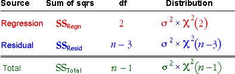
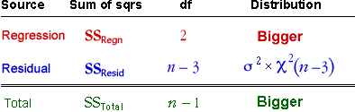
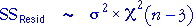
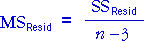

If neither explanatory variable is related to the response...
If both slope coefficients in the model, β1 and β2, are zero, all sums of squares have chi-squared distributions.

Also, the regression and residual sums of squares are statistically independent.
If one or both of the explanatory variables are related to the response...
The residual sum of squares still has the same chi-squared distribution but the regression and total sums of squares are bigger.

Since the regression sum of squares is larger (in relation to the residual sum of squares) when one or both of the explanatory variables are related to the response, large values provide evidence of the existence of a relationship.
Simulation
The diagram below generates random samples of 25 values from a normal linear model in which neither of the explanatory variables affect the response — i.e. both slope coefficients in the model underlying the data are zero. This would be the model if neither abdomen circumference nor height was related to body fat.
Click Accumulate then take several samples to build up the sampling distribution of the regression sum of squares.
Observe that the distribution matches the theoretical chi-squared distribution reasonably well.
Estimate of the error variance
Irrespective of the underlying model's two slope parameters, β1 and β2

Since the mean of a chi-squared distribution equals its degrees of freedom, the mean residual sum of squares is always a good (unbiased) estimate of the error variance of the model, σ2.
